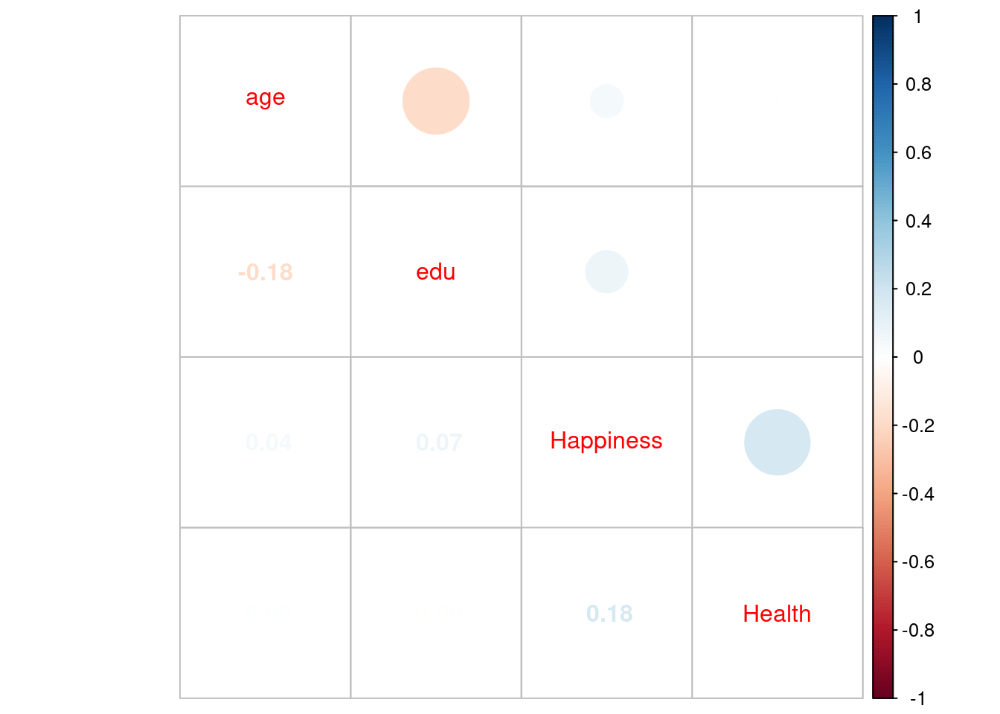
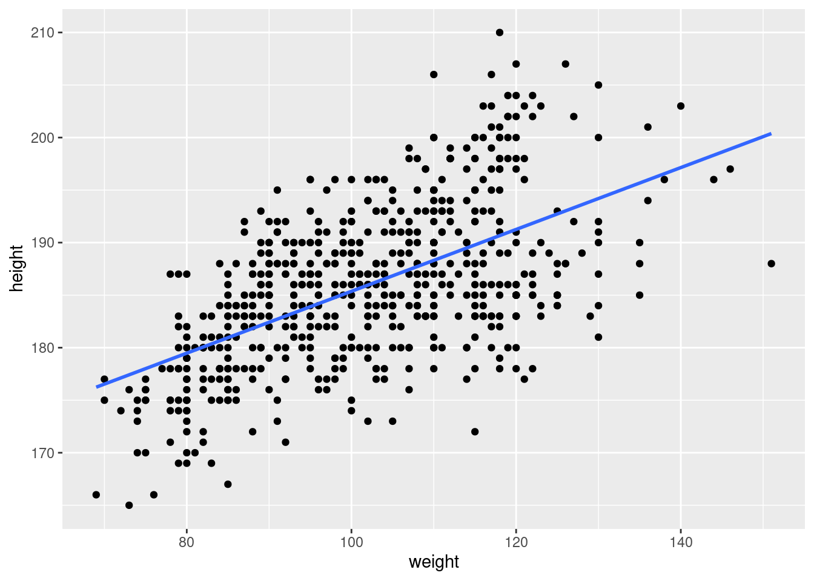

4 Analiza korelacji
4.1 Pojęcia wstępne
Pomiędzy zjawiskami występują związki (zależności.) Nauki formułują te związki w postaci praw. Jak takie prawo naukowe powstaje? Typowo w dwu etapach, najpierw za pomocą dedukcji stawia się hipotezę, potem konfrontuje się hipotezę z danymi (podejście hipotetyczno-dedukcyjne). Na tym drugim etapie używa się statystyki (lub matematyki jeżeli prawo ma charakter deterministyczny)
Upraszczając metoda hypodedukcji sprowadza się do dedukcyjnego sformułowania hipotezy, która następnie jest empirycznie falsyfikowana, tj. próbuje się wykazać, że jest ona nieprawdziwa. Konsekwencje: nie można dowieść prawdziwości żadnej hipotezy, można natomiast wykazać, że hipoteza jest fałszywa.
Związki między cechami mogą być: funkcyjne (nauki przyrodnicze) – wartościom jednej zmiennej odpowiada tylko jedna wartość drugiej zmiennej lub stochastyczne – wartościom jednej zmiennej odpowiadają z pewnym przybliżeniem wartości innej zmiennej.
Problem: czy istnieje związek (zależność) pomiędzy cechami? Jaki jest charakter zależności? Jaka jest siła zależności? Przykładowo czy istnieje związek pomiędzy wielkością dochodu (przyczyna) a wielkością spożycia mięsa (skutek), albo jako jest zależność pomiędzy wielkością produkcji, nakładami kapitałowymi i wielkości nakładów pracy?
4.2 Korelacyjny wykres rozrzutu (korelogram, wykres XY w Excelu, scatter plot)
W układzie kartezjańskim każdej obserwacji odpowiada kropka o współrzędnych XY.
O występowaniu związku świadczy układanie się kropek według jakiegoś kształtu (krzywej). O braku związku świadczy chmura punktów niepodobna do żadnej krzywej.
Punkty układające się według prostej świadczą o zależności liniowej (wyjątek: linia pozioma lub pionowa) Punkty układające się według krzywej świadczą o zależności nieliniowej.
Przykład: Zależność pomiędzy zamożnością a spożyciem mięsa
Organizacja Narodów Zjednoczonych do spraw Wyżywienia i Rolnictwa znana jako FAO udostępnia dane dotyczące konsumpcji żywności na świecie. Bank światowy udostępnia dane dotyczące dochodu narodowego.
Konsumpcja mięsa jest mierzona jako średnia konsumpcja w kilogramach w każdym kraju (per capita się mówi); Dochód podobnie jako średnia wielkość dochodu narodowego per capita. Dane dotyczą roku 2013.

4.3 Pomiar siły zależności: współczynnik korelacji liniowej Pearsona
Kowariancja to średnia arytmetyczna iloczynów odchyleń wartości zmiennych \(X\), \(Y\) od ich wartości średnich. Dla \(n\) obserwacji na zmiennych \(X\) oraz \(Y\) można powyższe zapisać w postaci następującej formuły:
\[\mathrm{cov} (xy) = \frac{\sum_{i=1}^n (x_i - \bar x)(y_i - \bar y)}{N}\]
gdzie: \(N\) – liczba obserwacji
Kowariancja zależy od rozproszenia (im większe tym większa), ma też dziwną jednostkę (jednostkaX · jednostkaY) oraz zależy od wybranych skal (tony vs gramy na przykład.)
Z powyższych powodów do pomiaru związku pomiędzy cechami używa się standaryzowanego współczynnika kowariancji, zwanego współczynnikiem korelacji liniowej, (Pearson linear correlation coefficient). Standaryzacja polega na podzieleniu wartości kowariacji przez iloczyn odchyleń standardowych \(s_x\) oraz \(s_y\).
\[r_{xy} = \frac{\mathrm{cov}(xy) }{s_x \cdot s_y}\]
Współczynnik jest miarą niemianowaną, przyjmującą wartości ze zbioru \([-1;1]\); Skrajne wartości \(\pm 1\) świadczą o związku funkcyjnym (wszystkie punkty układają się na linii prostej); wartość zero świadczy o braku związku (linia pozioma/pionowa)

Interpretacja opisowa: wartości powyżej 0,9 świadczą o silnej zależności. Kwadrat współczynnika korelacji liniowej Pearsonsa nazywamy współczynnikiem determinacji.
Przykład: korelacja między spożyciem mięsa a GDP
Współczynnik korelacji liniowej wynosi 0.6823158 (umiarkowana korelacja).
Czy ta wartość jest istotnie różna od zera? Jest na to stosowny test statystyczny, który sprowadza się do określenia jakie jest prawdopodobieństwo otrzymania r = 0.6823158 przy założeniu że prawdziwa wartość r wynosi zero. Otóż w naszym przykładzie to prawdopodobieństwo wynosi 3.850676e-26 (czyli jest ekstremalnie małe – r jest istotnie różne od zera).
Kwadrat współczynnika korelacji jest określany współczynnikiem determinacji i jest oznaczany jako \(r^2\) lub \(R^2\). Współczynnik ten jest intrepretowany jako część zmiany wartości zmiennej objaśnianej która jest wyjaśniona przez zmiany wartości zmiennej objaśniającej (przyczyna). \(r^2\) w zależności pomiędzy spożyciem mięsa a GDP wynosi 0.4655549, czyli 46.56% zmienności spożycia mięsa jest objaśniana przez zmienność GDP.
4.3.1 Macierz korelacji
Wstępnym etapem analizy zależności między zmiennymi jest często hurtowa ocena współczynników korelacji w postaci kwadratowej macierzy korelacji.
Przykład: korelacja pomiędzy wiekiem, edukacją, szczęściem a stanem zdrowia
Mohammadi S. i inni badali zależność pomiędzy wiekiem, poziomem edukacji, szczęściem a stanem zdrowia. (The relationship between happiness and self-rated health: A population-based study of 19499 Iranian adults; https://doi.org/10.1371/journal.pone.0265914)
## age edu Happiness Health
## age 1.00000000 -0.18341325501 0.04491863 0.00125622963
## edu -0.18341326 1.00000000000 0.07418519 -0.00003728405
## Happiness 0.04491863 0.07418519038 1.00000000 0.17863069296
## Health 0.00125623 -0.00003728405 0.17863069 1.00000000000Albo w bardziej efektownej postaci tekstowo-graficznej:

4.3.2 Pomiar siły zależności: współczynnik korelacji rang
Współczynnik korelacji rang (Spearmana vel Spearman’s Rank-Order Correlation) może być stosowany w przypadku gdy cechy są mierzone w skali porządkowej (lub lepszej)
Obliczenie współczynnika Spearmana dla \(N\) obserwacji na zmiennych \(XY\) polega na zamianie wartości zmiennych \(X\) oraz \(Y\) na rangi (numery porządkowe od \(1...N\)). Następnie stosowana jest formuła współczynnika korelacji liniowej Pearsona (\(\tau_x\) oraz \(\tau_y\) oznaczają rangi):
\[\rho_{xy} = \frac{\textrm{cov}(\tau_x, \tau_y)}{s_{\tau_x} s_{\tau_y}}\]
Współczynnik \(\rho_{xy}\) to – podobnie jak oryginalny współczynnik korelacji liniowej Pearsona – miara niemianowana, o wartościach ze zbioru [-1;1];
Wzór alternatywny
\[r_s = 1 - \frac{6\sum d_i^2}{n(n^2 -1)}\] gdzie: \(d_i\) to różnica pomiędzy rangami cech X oraz Y (\(d_i= x_i - y_i\)); n – liczba par cech \(X/Y\).
Przykład: spożycie mięsa na świecie
Współczynnik Pearsona i Spearmana dla zależności między spożyciem mięsa w 1980 a spożyciem mięsa w 2013 roku (zmienna objaśniana):
## [1] "współczynnik Pearsona: 0.68"## [1] "współczynnik Spearmana: 0.68"Nie ma sensu liczenia współczynnika korelacji rang w przypadku kiedy obie cechy są liczbami, bo wtedy należy użyć normalnego współczynnika Pearsona. Ale nie jest to też błędem więc w powyższym przykładzie go liczymy :-)
Współczynnik korelacji liniowej Spearmana wynosi 0.6845429 (umiarkowana korelacja).
Czy ta wartość jest istotnie różna od zera? Jest na to stosowny test statystyczny, który sprowadza się do określenia jakie jest prawdopodobieństwo otrzymania \(r_s\) = 0.6845429 przy założeniu że prawdziwa wartość \(r_s\) wynosi zero. Otóż w naszym przykładzie to prawdopodobieństwo wynosi 2.302116e-26 (czyli jest ekstremalnie małe – \(r_s\) jest istotnie różne od zera).
4.4 Współczynnik zbieżności Czuprowa
Współczynnik zbieżności Czuprowa (\(T_xy\)) stosuje się w badaniu zależności cech ilościowych, jak i jakościowych. Miara ta wykorzystuje statystykę chi-kwadrat (\(\chi^2\)) o postaci:
\[\chi^2 = \sum_{i=1}^k\sum_{j=1}^r \frac{(n_{ij} - \hat n_{ij})^2}{\hat n_{ij}} = \sum_{i=1}^k \sum_{j=1}^r \frac{\hat n_{ij}^2}{ \hat n_{ij}} -n\] gdzie:
\[\hat n_{ij}= \frac{n_{i.} \cdot n_{.j}}{n}\]
\(n_{ij}\) – liczebności rzeczywiste (empiryczne),
\(\hat n_{ij}\) – liczebności teoretyczne (oczekiwane),
\(n_{i.}\) – suma liczebności i-tego wiersza,
\(n_{.j}\) – suma liczebności j-tej kolumny,
\(n\) – łączna suma liczebności,
\(r\) – liczba wierszy,
\(k\) – liczba kolumn.
\[T_{xy} = \sqrt{\frac{\chi^2}{n \sqrt{(r-1)(k-1)}}}\] Wartości współczynnika korelacji Czuprowa znajdują się w przedziale [0, 1]. Im wartość współczynnika jest bliższa jedności tym zależność jest silniejsza.
4.5 Pomiar siły zależności: regresja liniowa
Regresja liniowa zakłada, że istnieje związek przyczyna-skutek i ten związek można opisać linią prostą (stąd liniowa). Skutek jest jeden i nazywa się go zmienną zależną a przyczyn może być wiele i noszą nazwę zmiennych niezależnych (albo predyktorów). W przypadku gdy związek dotyczy dwóch zmiennych mówi się o regresji prostej. Przykładowo zależność pomiędzy spożywaniem kawy w czasie sesji egzaminacyjnej a wynikiem egzaminu można formalnie zapisać jako:
\[\textrm{wynik} = b_0 + b_1 \cdot \textrm{kawa}\]
Współczynnik \(b_1\) określa wpływ spożycia kawy na wynik egzaminu. W szczególności jeżeli \(b_1 = 0\) to nie ma związku między spożywaniem kawy a wynikiem egzaminu.
Jeżeli zmiennych niezależnych jest więcej niż jedna, to mówimy o regresji wielorakiej. Przykładowo zależność pomiędzy wynikiem egzaminu, spożyciem kawy czasem nauki oraz predyspozycjami opisuje następujący model regresji:
\[\textrm{wynik} = b_0 + b_1 \cdot \textrm{kawa} + b_2 \cdot \textrm{czas} + b_3 \cdot \textrm{predyspozycje} \]
Współczynnik \(b_1\) określa wpływ spożycia kawy \(b_2\) czasu poświęconego na naukę, a \(b_3\) predyspozycji (intelektualnych, mierzonych np. średnią oceną ze studiów)
4.5.1 Regresja prosta
Równanie regresji dla zmiennych \(Y\) (skutek) oraz \(X\) (przyczyna) można zapisać następująco:
\[Y = b_0 + b_1 \cdot X + e \]
\(Y = b_0 + b_1 \cdot X\) to część deterministyczna, a \(e\) oznacza składnik losowy.
O tym składniku zakładamy, że średnia jego wartość wynosi zero. Można to sobie wyobrazić, że w populacji jest jakaś prawdziwa zależność \(Y = b_0 + b_1 \cdot X\) pomiędzy \(X\) a \(Y\), która w próbie ujawnia się z błędem o charakterze losowym. Ten błąd może wynikać z pominięcia jakiejś ważnej zmiennej (model to zawsze uproszczenie rzeczywistości), przybliżonego charakteru linii prostej jako zależności pomiędzy \(X\) a \(Y\) (prosta ale nie do końca prosta) albo błędu pomiaru.
Współczynnik \(b_1\) (nachylenia prostej) określa wielkość efektu w przypadku regresji, tj. siły zależności pomiędzy zmiennymi.
Współczynnik \(b_1\) ma prostą interpretację: jeżeli wartość zmiennej \(X\) rośnie o jednostkę to wartość zmiennej \(Y\) zmienia się przeciętnie o \(b_1\) jednostek zmiennej \(Y\).
Wyraz wolny zwykle nie ma sensownej interpretacji (formalnie jest to wartość zmiennej \(Y\) dla \(X=0\))
Oznaczmy przez \(y_i\) wartości obserwowane (zwane też empirycznymi) a przez \(\hat y_i\) wartości teoretyczne (leżące na prostej linii regresji).
Wartości \(b_0\) oraz \(b_1\) wyznacza się minimalizując sumę kwadratów odchyleń wartości teoretycznych od wartości empirycznych, tj.:
\[\sum_{i=1}^n (y_i - \hat y_i)^2 = \sum_{i=1}^n e_i^2 \to \min\]
Rozwiązując powyższy problem minimalizacyjny otrzymujemy wzory definiujące parametry \(b_0\) oraz \(b_1\). Metoda wyznaczania parametrów linii prostej w oparciu o minimalizację sumy kwadratów odchyleń nosi nazwę metoda największych kwadratów.
Przypominamy, że estymatorem nazywamy metodę oszacowania parametru na podstawie próby. Ponieważ traktujemy \(b_0\) oraz \(b_1\) jako parametry jakieś populacji generalnej to wzory na \(b_0\) oraz \(b_1\) statystyk nazwie estymatorami parametrów \(b_0\) oraz \(b_1\). W konsekwencji tego \(b_0\)/\(b_1\) posiadają jakąś wartość średnią oraz wariancję.
Przypominamy że wartość średnia dobrego estymatora powinna wynosić zero (bo wtedy nie ma błędu systematycznego) oraz że wariancja estymatora powinna maleć wraz ze wzrostem liczebności próby. Można udowodnić że estymatory parametrów \(b_0\)/\(b_1\) uzyskane metodą najmniejszych kwadratów posiadają obie właściwości.
Graficznie kryterium minimalizacyjne przedstawia rysunek

Suma podniesionych do kwadratu odległości pomiędzy czerwonymi i niebieskimi kropkami ma być minimalna. Kropki niebieskie to wartości empiryczne; kropki czerwone to wartości teoretyczne. Zadanie wyznaczenie parametrów takiej prostej sprowadza się do (dla dwóch zmiennych):
\[\sum (y_i - b_0 - b_1 x)^2 \to \min\]
Rozwązując powyższe ze względu na \(b_0\) i \(b_1\) otrzymujemy oceny parametrów regresji:
\[b_1 = \frac{\sum_{i=1}^n (x_i - \bar x)(y_i - \bar y)}{\sum_{i=1}^n (x_i - \bar x)^2}\]
\[b_0 = \bar y - b\bar x\]
Interpretacja: jednostkowa zmiana \(Y\) przy zmianie \(X\) o jednostkę.
Można udowodnić, że bez względu czy punkty na wykresie układają się w przybliżeniu wzdłuż prostej czy nie, zawsze jakaś prosta zostanie dopasowana (jeżeli tylko punktów jest więcej niż jeden.) Jak to ocenić w sposób bardziej konkretny a nie tylko na oko dopasowanie prostej do wartości empirycznych?
Ocena dopasowania: wariancja resztowa oraz średni błąd szacunku
Oznaczając resztę jako: \(e_i = y_i - \hat y_i\), definiujemy wariancję resztową jako:
\[s_e^2 = \frac{\sum e_i^2}{n-k}\].
Gdzie \(n\) oznacza liczbę obserwacji (liczebność próby), a \(k\) liczbę szacowanych parametrów bez wyrazu wolnego czyli jeden w regresji prostej (a więcej niż jeden w regresji wielorakiej o czym dalej.)
Pierwiastek kwadratowy z wariancji resztowej. nazywamy średnim błędem szacunku (mean square error, MSE)
Ocena dopasowania: współczynniki zbieżności i determinacji
Suma kwadratów reszt (albo odchyleń wartości teoretycznych od wartości empirycznych, albo suma kwadratów błędów vel resztowa suma kwadratów):
\[\mathrm{RSK} = (y_1 - \hat y_1)^2 + (y_2 - \hat y_2)^2 + ... + (y_n - \hat y_n)^2\].
Suma kwadratów odchyleń wartości empirycznych od średniej (ogólna suma kwadratów):
\[\mathrm{OSK} = (y_1 - \bar y)^2 + (y_2 - \bar y)^2 + ... + (y_n - \bar y)^2\]
Suma kwadratów odchyleń wartości teoretycznych od średniej (wyjaśniona suma kwadratów):
\[\mathrm{WSK} = (\hat y_1 - \bar y)^2 + (\hat y_2 - \bar y)^2 + ... + (\hat y_n - \bar y)^2\]
Można wykazać, że \(\mathrm{OSK} = \mathrm{WSK} + \mathrm{RSK}\) zatem (po podzieleniu obu stron równania przez \(\mathrm{OSK}\) otrzymujemy:
\[ 1 = \mathrm{WSK}/\mathrm{OSK} + \mathrm{RSK}/\mathrm{OSK}\]
Współczynnik determinacji oznaczany jako \(R^2\) to \(\mathrm{WSK}/\mathrm{OSK}\).
Współczynnik zbieżności oznaczany jako \(\Phi^2\) (duża grecka litera Fi) to \(RSK/OSK\).
Współczynnik zbieżności $^2$100% informuje ile % zmienności zmiennej \(Y\) nie została wyjaśniona przez zmienne regresji.
Współczynniki przyjmują wartość z przedziału \([0,1]\) lub \([0, 100]\)% jeżeli ich wartości zostaną pomnożone przez 100.
Interpretacja współczynnika zbieżności: udział (procent) zmienność wyjaśnianej przez linię regresji. Im \(R^2\) jest bliższe jedności (lub 100% jeżeli jest współczynnik zbieżności jest wyrażony w procentach) tym lepiej.
Odchylenie standardowe składnika resztowego \(S_e\)
\[S_e^2 = \sqrt{\sum e_i^2}{n-2}\]
O ile średnio (\(\pm\)) odchylają się wartości rzeczywiste zmiennej objaśnianej od teoretycznych obliczonych na podstawie regresji.
Współczynnik zmienności resztowej \(V_e\)
\[V_e = \frac{S_e}{\bar y} \cdot 100\]
Jaką część średniej wartości zmiennej objaśnianej stanowi jej odchylenie standardowe reszt.
Ocena dopasowania: istotność parametru \(b_1\)
Jeżeli: \(Y= 0 \cdot X + b_0\), to \(Y = b_0\) czyli nie ma zależności pomiędzy \(X\) oraz \(Y\). Wartości \(b_1\) bliskie zero wskazują na słabą zależność pomiędzy cechami.
Przypominamy, że estymator parametru \(b_1\) ma średnią równą prawdziej wartości \(b_1\). Dodatkowo zakładamy, że rozkład tego estymatora jest normalny. To założenie pozwala wiarygodnie oszacować wariancję; w konsekwencji znamy dokładny rozkład (bo przypominamy, że rozkład normalny jest określony przez dwa parametry: średnią oraz właśnie wariancję)
Można teraz zadać pytanie jeżeli faktycznie \(b_1=0\), to jakie jest prawdopodobieństwo, że współczynnik \(\hat b_1\) oszacowany na podstawie \(n\) obserwacji będzie (co do wartości bezwzględnej) większy niż \(b_e\). Albo inaczej: otrzymaliśmy \(b_e\), jakie jest prawdopodobieństwo otrzymania takiej wartości (lub większej co do wartości bezwzględnej) przy założeniu, że istotnie \(b_1=0\).
Jeżeli takie prawdopodobieństwo jest duże, to uznajemy, że być może \(b_1 = 0\), a jeżeli małe to będziemy skłonni uznać, że \(b_1 \not= 0\). Duże/małe przyjmujemy arbitralnie, zwykle jest to \(0,1\), \(0,05\) lub \(0,01\). Tak zgadza się, to prawdopodobieństwo to poziom istotności
Testowanie istotności współczynnika regresji jest ważnym kryterium oceny jakości dopasowania. Regresja z nieistotnym współczynnikiem nie może być podstawą do interpretowania zależności pomiędzy \(X\) oraz \(Y\).
Przykład: Waga a wzrost rugbystów
Zależność między wagą (weight) a wzrostem (height):
\[ \textrm{height} = b_0 + b_1 \textrm{weight}\] Oszacowanie tego równania na próbie 635 uczestników Pucharu Świata w rugby w 2023 roku daje następujące wyniki:

| Zmienna | B | Błąd stand | z | p | CI95 |
|---|---|---|---|---|---|
| (Intercept) | 155.9260196 | 1.7525838 | 88.96922 | 0 | 152.480000–159.370000 |
| weight | 0.2944082 | 0.0170125 | 17.30539 | 0 | 0.260000–0.330000 |
Co oznacza, że wzrost wagi o 1kg skutkuje przeciętnie większym wzrostem o 0.2944082 cm. Współczynnik determinacji wynosi 32.86%. Współczynnik nachylenia prostej jest istotny ponieważ wartość \(p\) (tak mała, że w tabeli oznaczona jako 0) jest grubo poniżej zwyczajowego poziomu istotności (p < 0,05).
Kolumna CI95 zawiera 95% przedziały ufności:
z 95% prawdopodobieństwem wartość współczynnika nachylenia
prostej znajduje się w przedziale 0,24–0,32.
Przykład: zamożność a konsumpcja mięsa
Następujące równanie opisuje zależność pomiędzy dochodem narodowym na głowę (per capita) a konsumpcją mięsa w kilogramach:
\[\textrm{konsumpcja} = b_0 + b_1 \textrm{gdp}\] Model oszacowano dla krajów świata w roku 2013 na podstawie danych pobranych z bazy FAO Food Balance Sheet oraz Banku Światowego, otrzymując następujące wyniki
| Zmienna | B | Błąd stand | z | p | CI95 |
|---|---|---|---|---|---|
| (Intercept) | 34.0847681 | 2.2324799 | 15.26767 | 0 | 29.680000–38.490000 |
| gdp2013 | 0.0011075 | 0.0000996 | 11.12427 | 0 | 0.000000–0.000000 |
Każdy USD per capita więcej dochodu narodowego (GDP) oznacza przeciętny wzrost spożycia mięsa o 0.0011075 kg. Przeciętna różnica wartości teoretycznych od empirycznych wynosi 21,04 kg (średni błąd szacunku). Współczynnik zbieżności wynosi 40.88%. Współczynnik nachylenia prostej (mimo że jego wartość wynosi zaledwie 0.0011075) jest statystycznie istotny.
4.5.2 Przypadek ogólny: regresja wieloraka
Uogólnieniem regresji prostej jest regresja wieloraka. W modelu regresji wielorakiej po lewej stronie równania występuje zmienna liczbowa oznaczona jako \(Y\), a po prawej zmienne liczbowe lub nominalne, \(X_1, \ldots, X_k\):
\[Y = b_0 + b_1 \cdot X_1 + b_2 \cdot X_2 + ... + b_k \cdot X_k \]
Wpływ każdej zmiennej \(X_i\) na zmienną zależną \(Y\) jest określony przez odpowiedni współczynnik \(b_i\).
Podobnie jak w przypadku regresji prostej do oceny stopnia dopasowania modelu do danych wykorzystuje się: średni błąd szacunku, współczynnik zbieżności \(R^2\) oraz weryfikuje się istotność współczynników \(b_i\).
Przykład: płodność a dochody
Czy bogatsi i pracujący na etatach rodzą mniej dzieci?
\[F = GDP + UP + FE\]
gdzie:
f – współczynnik płodności (fertility ratio);
urbanpop – odsetek ludności miejskiej (urban population);
fe – odsetek kobiet z wyższym wykształceniem (female education)
Dane pochodzą z Banku Światowego…
| Zmienna | B | Błąd stand | z | p | CI95 |
|---|---|---|---|---|---|
| (Intercept) | 2.9529179 | 0.4936601 | 5.981682 | 0.0000003 | 1.960000–3.950000 |
| urbanpop | -0.0081040 | 0.0066170 | -1.224732 | 0.2269110 | -0.020000–0.010000 |
| womenedu | -0.0551752 | 0.0206348 | -2.673892 | 0.0103439 | -0.100000—0.010000 |
Współczynnik determinacji \(R^2\) zaledwie 0.172232.
Zmienna urbanpop okazała się nieistotna statystycznie.
Wybór zmiennych objaśniających
Zwykle jest tak, że do objaśniającej kształtowanie się wartości zmiennej \(Y\) kandyduje wiele potencjalnych predyktorów \(X_k\). Model zawierający wszystkie \(X_k\) predyktory niekoniecznie będzie najlepszy. Nie wdając się w omawianie szczegółowych zasad poprzestaniemy na dwóch kryteriach:
Model prostszy jest lepszy od modelu bardziej skomplikowanego jeżeli adekwatnie objaśnia zmienność \(Y\) (zasada brzytwy Ockhama)
Model powinien zawierać tylko zmienne o współczynnikach, których wartości są statystycznie różne od zera
Regresja krokowa (stepwise regression) jest metodą wyboru najlepszych predyktorów spośród większego zbioru zmiennych. Występuje w dwóch wariantach dołączania i eliminacji. Ponieważ eliminacja wydaje się prostsza omówimy tylko ten wariant.
W metodzie eliminacji początkowym modelem jest model zawierający wszystkie potencjalne \(X_k\) predyktory. Następnie testujemy istotność wszystkich współczynników regresji i usuwamy ze zbioru predyktorów ten, który jest „najbardziej nieistotny“ (ma największą wartość \(p\)) Procedurę powtarzamy dla modelu bez usuniętej zmiennej. Procedurę przerywamy gdy wszystkie współczynniki regresji są statystycznie istotne.
4.5.3 Zmienne zero-jedynkowe
Zamiast (celem wykazania związku między zmienną liczbową a nominalną) porównywać średnie w grupach możemy wykorzystać metodę regresji wielorakiej. Zmienna nominalna jest zamieniana na jedną lub więcej zmiennych binarnych, które przyjmują tylko dwie wartości 0 lub 1.
Przykładowo rodzaj miejsca pracy (skala nominalna; dwie wartości: szpital, przychodnia)
można zamienić na zmienną binarną praca przypisując 1 = szpital, oraz
0 = przychodnia (lub odwrotnie). Załóżmy że poziom stresu zależy od stażu pracy, satysfakcji
(obie mierzone na skali liczbowej)
rodzaju miejsca pracy. Możemy to zapisać jako następujące równanie regresji
\[\textrm{stres} = b_0 + b_1\textrm{staż} + b_2 \textrm{satysfakcja} + b_3 \textrm{praca}\] Jaka jest interpretacja współczynnika \(b_3\)? Zakładając że 0 = przychodnia, \(b_3\) oznacza przeciętną zmianę wielkości stresu spowodowaną pracą w szpitalu w porównaniu do pracy w przychodni. Jeżeli ten współczynnik jest istotny statystycznie, to istnieje zależność pomiędzy stresem a miejscem pracy. Czyli zamiast stosować test \(t\)-Studenta i porównywać średnie w grupach, możemy oszacować model regresji z wykorzystaniem stosownej zmiennej zero-jedynkowej a następnie sprawdzić czy współczynnik stojący przy tej zmiennej jest istotny.
Jeżeli zmienna nominalna ma \(n\) wartości należy ją zamienić na \(n-1\) zmiennych zero-jedynkowych. Załóżmy że stress zależy także od wykształcenia, mierzonego w skali nominalnej (średnie, licencjat, magisterskie.) Tworzymy dwie zmienne: magister (jeden jeżeli respondent ma wykształcenie magisterskie lub 0 jeżeli nie ma) oraz licencjat (jeden jeżeli respondent ma licencjat lub 0 jeżeli nie ma). Równanie regresji ma postać:
\[\textrm{stres} = b_0 + b_1\textrm{staż} + b_2 \textrm{satysfakcja} + b_3 \textrm{praca} + b_4 \textrm{magister} + b_5 \textrm{licencjat} \]
Jeżeli \(\textrm{magister} = 0\) oraz \(\textrm{licencjat} = 0\) to osoba ma wykształcenie średnie.
Interpretacja: \(b_4\) (jeżeli istotne) oznacza przeciętną zmianę wielkości stresu osoby z wykształceniem magisterskim w porównaniu do osoby z wykształceniem średnim. Podobnie \(b_5\) oznacza przeciętną zmianę wielkości stresu osoby z wykształceniem licencjackim w porównaniu do osoby z wykształceniem średnim.
Sobczyk komplikuje sprawę wprowadzając pojęcie regresji I oraz II rodzaju. Regresja I rodzaju to zależność pomiędzy wartościami zmiennej